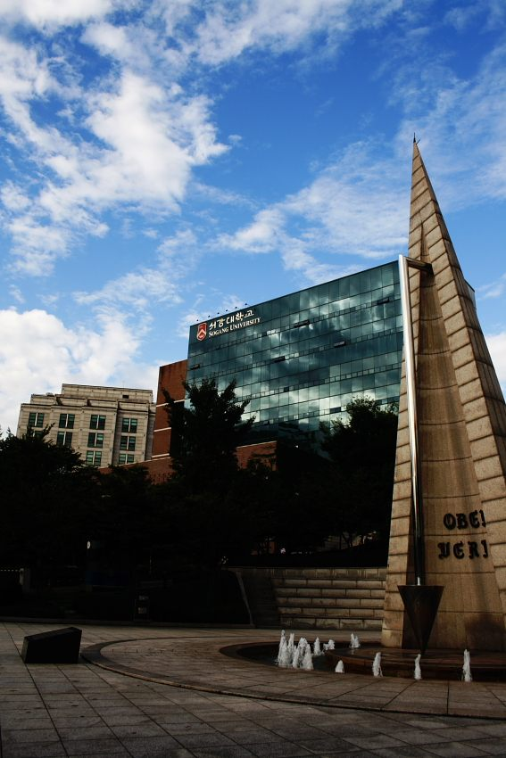

대부분의 대학은 계열을 정해 놓고 “인문은 국어를 더 본다”고 알려 줍니다. 서강대학교는 조금 다릅니다. 두 가지 계산식으로 각각 점수를 낸 뒤, 학생에게 유리한 쪽을 자동으로 골라 줍니다. 그래서 “서강대는 국어형이냐 수학형이냐”라는 질문 자체가 성립하지 않습니다. 이 글은 그 구조를 “그래서 어느 과목을 먼저”로 바꿔 읽는 글입니다. 고3 수학과외에 시간을 얼마나 줄지 정하는 기준이 됩니다.
| 유형 | 국어 | 수학 | 탐구 |
|---|---|---|---|
| A형 | 36.7% | 43.3% | 20.0% |
| B형 | 43.3% | 36.7% | 20.0% |
A형과 B형으로 각각 점수를 산출한 뒤 더 높은 쪽을 최종 성적으로 반영합니다. 지원자가 유형을 고르는 것이 아니라 자동으로 유리한 쪽이 적용됩니다. 국어와 수학은 표준점수, 탐구는 백분위를 대학 자체 변환표준점수로 바꿔 씁니다.
두 유형의 차이는 국어와 수학 사이에서 6.6%p가 오가는 것뿐입니다. 크지 않아 보이지만 준비 전략은 꽤 달라집니다.
첫째, 두 과목을 똑같이 평평하게 만들 이유가 사라집니다. 국어와 수학이 나란히 중간이면 어느 식으로 계산해도 중간입니다. 반대로 한쪽이 확실히 강하면 그 강점에 43.3%가 얹힙니다. 약한 과목을 평균까지 끌어올리는 것보다 이미 강한 과목을 더 확실하게 만드는 쪽이 이 표에서는 점수로 더 잘 돌아옵니다.
둘째, 약한 쪽을 버려도 된다는 뜻은 아닙니다. 약한 과목에도 36.7%가 붙습니다. 반영하지 않는 것이 아니라 가중치가 조금 작을 뿐입니다. 한 과목이 무너지면 어느 식으로 계산해도 회복되지 않습니다.
탐구는 두 유형 모두 20%로 고정입니다. 국어·수학보다 작지만, 탐구는 백분위를 대학이 정한 변환표준점수로 바꿔 반영합니다. 과목 사이의 난이도 차이를 대학이 한 번 조정해서 쓴다는 뜻이고, 그래서 원점수 감각만으로는 유불리를 가늠하기 어렵습니다.
실전에서 쓸 기준은 단순합니다. 탐구는 두 과목을 끝까지 같이 끌고 갑니다. 한 과목만 잘하고 한 과목을 버리는 조합은 20%짜리 칸을 반쯤 비우는 것과 같습니다.
영어는 등급에 따른 점수로 반영되는데, 1등급 100점, 2등급 99.5점으로 두 등급 사이 차이가 0.5점입니다. 한국사는 1~4등급에 10점을 줍니다. 등급이 한 칸 내려갔을 때의 손해가 다른 대학보다 작은 구조입니다.
그래서 서강대학교만 놓고 보면 영어에 시간을 몰아주는 것은 효율이 낮습니다. 다만 다른 대학을 함께 지원한다면 이야기가 달라집니다. 영어는 서강대 기준이 아니라 같이 쓸 대학 중 영어를 가장 무겁게 보는 곳을 기준으로 관리하는 편이 안전합니다.
학생 수준에 맞는 선생님을 24시간 안에 추천해 드려요. 상담은 무료입니다.